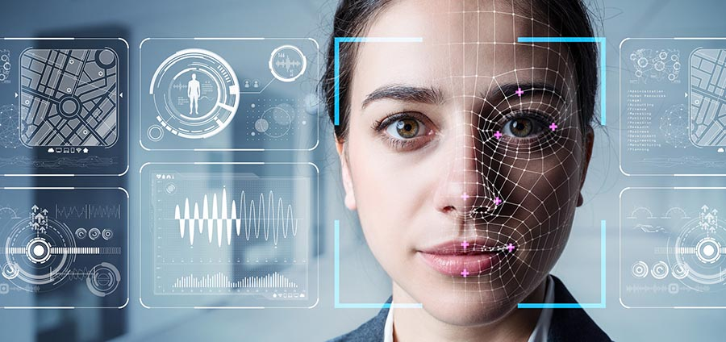

NEC Center of Excellence
NEC Center of Excellence將為來賓展示 NEC 引以為傲的最新科技及各技術實際在各種生活情境的應用，進而親自並深刻體會 NEC 活用數位科技所產生出的各式資訊，如何成為可分析歸納的有效知識，創造高效率且嶄新的價值，為社會注入新活力，共創美好未來。
場館介紹
情境應用
-
智慧零售
自動、預測、精準的未來零售
NEC 結合新世代人工智慧、物聯網 (IoT) 與自動化技術，為消費者帶來更便捷的新體驗、為零售業者提供更精準的進銷存管理能力，提升營運效率並降低成本。
提供消費者輕鬆、快速的自動化刷臉結帳體驗
透過 NEC 精準度第一的人臉辨識技術、無需在產品上貼標籤或使用 RFID 技術的獨家物體 (產品) 指紋辨識系統、以及對各種票證、手機和會員制「刷臉支付」等支援，讓消費者享受快捷、智慧的消費體驗。
智慧型冷藏設備藉由 IoT 技術執行預測分析並主動發出維修警示
NEC 智慧冷藏設備可取代人工監控作業，透過設備內建的物聯網控制器，每分鐘自動紀錄冷藏設備的溫度、濕度、電流、冷媒壓力等，主動將所有數據傳送到雲端，經由「不變量分析演算法」的機器學習功能，分析歷史資料，如判斷異於平常的動向，有可能發生設備故障的情形，即主動向維修中心發出警示，防範問題於未然。
先進 AI 技術精準預測庫存與自動進貨
NEC AI 技術群之一的獨家「異種混合機器學習」技術，能結合店面 POS 系統資料、店內進銷存資訊、以及例假日、天氣等多樣化資訊，自動導出預測需求，讓店主再也不必採用「安全庫存」的進貨方式，而是由系統高精確地預測商品需求，自動訂貨，進而降低庫存成本、增加產品熱銷的利潤。
-
入口門禁
一張臉通行無阻
NEC 獨門臉部辨識技術辨識精準度榮獲全球評鑑第一，兼顧保全強度與流暢的門禁出入管理。
能與各種出入門禁管理系統及閘門連動
透過 API，NEC NeoFace 產品能與各種出入門禁管理系統、閘門連動，客戶無需重新更換整套系統或閘門，只需直接與現有門禁系統連動就能達到「人臉辨識解鎖開門」的效果。
兼顧安全性與便利性
透過行進間臉部辨識技術，在人員未注意到攝影機存在的狀態下，達到大樓及房間門禁流暢運作與防止尾隨闖關等效果。
雙重把關更安全
NEC NeoFace 產品附有讀卡機，能夠同時進行人臉、IC卡的雙重要素辨識。透過此功能，也能避免 IC 卡遭他人借用、盜取等不當出入情況發生。
-
虹膜辨識
2 公尺的新世代人眼辨識
NEC的突破性虹膜辨識技術，最遠還可以偵測 2 公尺距離的不同人眼，且精準度為目前多種生物辨識技術之最，為公共場域安全提供良好的解決方案。其應用包括：
嚴格的個人身分辨識
為機場海關出入境提供嚴格辨識技術以提高國與國之間人民往來的安全性，其流暢辨識程序加快審核速度，有效減少等待人流。利用虹膜辨識核發唯一身分證，強化個人認證，嚴防冒名頂替，同時適用於護照、駕照保等身份系統。
高機密場域管制
高度唯一性、高強度的資料安全性，嚴格管制金庫、機房重地的通關，嚴防用戶在鉅額提款時遭他人盜領。
犯罪調查
取得人臉、掌紋、指紋及虹膜影像，建立多模生物辨識資料庫，以便嫌疑人因受傷無法利用單一辨識技術時，可搭配其他生物辨識資料進行辨識。
-

智慧金融
啟動金融科技新體驗
NEC 多年來在全球各地已協助眾多金融客戶推出多項 Fintech 金融服務，以人臉辨識技術為核心，跨業合作為金融服務打造未來新體驗、新場景：
多元刷臉服務
利用 NEC 的核心技術，完成人臉註冊後，未來毋需攜帶任何卡片、手機，即可在ATM刷臉提款、直接開戶，甚至以後將整合、擴充多項重要功能，包括提供立即貸款、保險的服務，走向更多元化的服務。
BANK ID 漫遊
銀行將導入 OPEN API 技術，使金融用戶在單一應用服務中快速註冊，並獲取「BANK ID」後，即可享受開放生態系中的所有服務，免去重複註冊的困擾，讓用戶能重新拿回資料使用權，而銀行也能根據用戶平日關注喜好的資料紀錄，提供合適的理財資訊、投資建議，拉近用戶與銀行的距離。
-
視線推定
人氣強強滾 行銷新利器
以優異的人臉辨識技術為基礎， NEC 遠距離視線推定技術可在不需特定接觸的情形下，偵測出 10 公尺內人物的視線方向，其應用場域廣泛，包括：
透過視線量掌握廣告效果
利用視線推定技術，在各大商場入口附近設置多台攝影機，即時掌握廣告看板廣告效果，在店鋪內亦可自動辨識顧客關注之商品，以調整賣場動線、配置，並篩選出在不同時段、不同客群的人氣商品。
其他應用
其他如該技術是否正確且確實履行義務，司機是否安全駕駛、是否確實檢查工作環境設備；鎖定可疑人物等犯罪預防、孩童走失監控或身心障礙者憑視線動向傳達需求，都是可應用的生活情境。
-
年齡性別辨識
大數據分析的最前線
洞察潛在消費者行為
內含年齡與性別辨識軟體的 NEC 感應裝置，可透過攝影機影像，即時分析人流客群的年齡、性別，從觀看的停留時間與觀看距離的遠近，甚至臉部的微笑程度，判別用戶對服務內容的關注程度、對服務品質的滿意程度，進而分析並預測潛在客戶的消費行為。
尖端技術
-
AI 驅動，神準無比：全球第一人臉辨識技術
高速
多重比對臉部檢測法：採神經網路演算法，正臉以外也能高速精準檢測。
高精準
攝動空間法，事先登錄各種預測角度，不易受角度光線等變化影響對比精準度。
低錯誤率
適應領域混合比對法：切成小方塊進行比對，遮住部分臉型時也能順利進行。
-
眼神讀心術：視線推定與追蹤
多重比對人臉偵測法
偵測臉型、五官、眼頭、眼角、瞳孔等多達76個比對特徵點，分析與攝影機的相對位置，推斷視線方向。
機器學習強化影像解析度
偵測距攝影機 10 公尺內人物之視線方向，誤差值在上下左右 5 度內。
高速特徵擷取運算
同時分析多人視線，運算時間不到 0.0001 秒。
-

黑暗中的神探：頂尖虹膜辨識科技
技術特色
台灣首發，高度唯一性可辨別雙胞胎，使用紅外線相機，黑暗中仍可進行辨識，此外，只需眼睛暴露於裝置前，對象戴眼鏡、戴帽或口罩皆可使用。
技術突破
最遠辨識距離達 2 公尺，影像解析度仍達 200 萬畫素，並榮獲美國 NIST 國家標準暨技術研究院評測達 99.33% 辨識準確度。
-
人流大數據的好幫手：Field Analyst 年齡性別分析
技術特色
系統透過檢測、測量、統計、更新 4 步驟，不須特別登錄，即時精確分析人流客群的性別、年齡、關注停留的時間、觀看距離的遠近，配戴口罩、眼鏡的人數比例，甚至是微笑程度。
消弭安全疑慮
輸入之影像資料僅輸出辨識資訊，影像資訊將自動刪除，以保護個人資料安全。